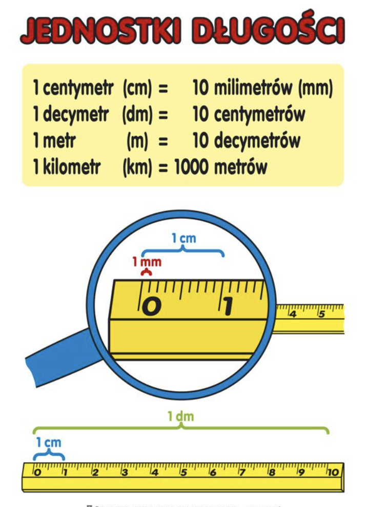

Matematyka > Wagi i miary > Długość >
Wagi i miary
📏 Długość
(Длина — jak mierzymy odległość)
📍 Co to jest długość?
- Długość mówi nam, jak daleko coś się rozciąga.
- To odległość między dwoma punktami.
✏️ Jednostki długości
-
Единицы длины
- Najczęściej używamy milimetrów (mm), centymetrów (cm), metrów (m) i kilometrów (km).
- 1 metr (m) = 100 centymetrów (cm)
- 1 kilometr (km) = 1000 metrów (m)

📐 Jak mierzymy długość?
- Używamy linijki, taśmy mierniczej lub metra.
- Mierzymy od jednego końca do drugiego.
🧩 Przykłady
- Długość kredki może wynosić 15 cm.
- Wysokość drzewa może być kilka metrów.
- Odległość między miastami może być wiele kilometrów.
💡 Ciekawostka!
- Najdłuższa rzeka na świecie to Nil — ma długość ponad 6 600 kilometrów!
- Długość mierzymy wszędzie — w szkole, domu i na podwórku.